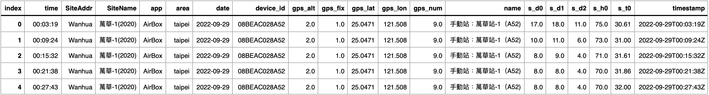
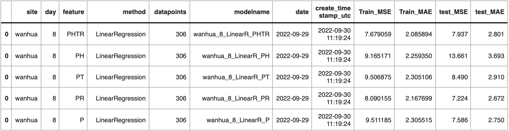
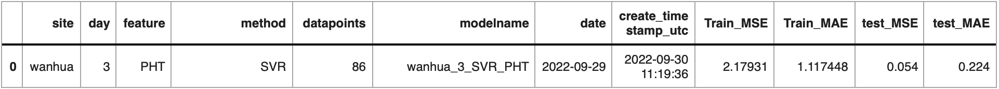
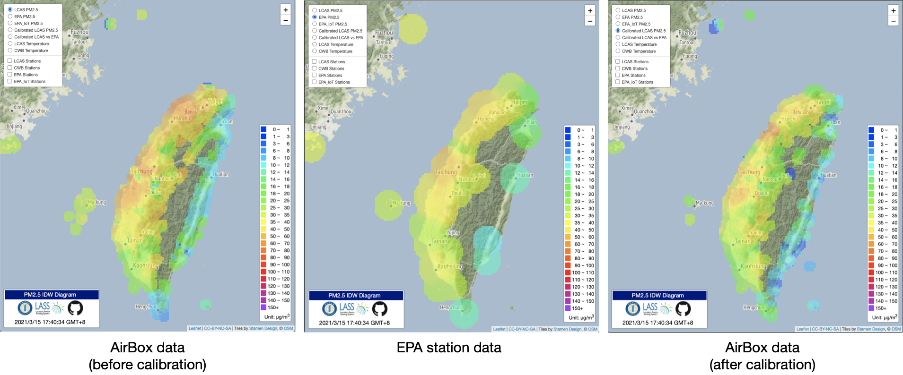

6.3. 感測器聯合校正

Table Of Contents
在這篇文章中，我們將以民生公共物聯網中的空品資料為例，介紹如何讓兩個不同等級的空品感測資料，可以透過資料科學的方法，進行系統性的動態校正，以達到系統資料融合的目的，讓不同佈建專案的成果，可以合力打造更為全面性的空品感測結果。我們使用下列兩種空品感測系統：
- 環保署空品感測器：在傳統的空品監測方式中，以極為專業、大型、昂貴的監測站為主，該專業的監測站由於部署及維護成本較高，通常會是由當地的環境保護機構（EPA）來負責運營。也因此不會在每個社區都有部署。依據台灣環保署網站公告，截至目前 2022 年 7 月為止，台灣的中央監測站數量為 81 座。
- 微型空品感測器：與傳統的大型專業測站相比，微型空品感測器利用低成本的感測器，透過網路的資料串連，以物聯網的方式建構更密集的空品感測網，這項技術不僅架設的成本低，連帶的提供了更靈活的安裝條件，擴大了可覆蓋的範圍。同時，這項技術具有易於安裝和維護的特點，滿足了大規模即時空氣品質監測系統的條件，而且能夠做到每分鐘上傳一次數據的資料頻率，也使用戶對於突然的污染事件得以立即的反應，進一步的降低傷害。
當然我們不能期待成本較低的感測器會擁有專業儀器的高準確度，如何提高其精準度成為成了另一項需要被解決的問題。因此，在以下的內容中，我們將演示如何利用資料科學的方法，調校微型空品感測器的空品感測結果，讓其感測資料的準確度能達到與環保署空品感測器相比擬的方法，以促進系統整合與更近一步的資料應用。
套件安裝與引用
在本章節中，我們將會使用到 pandas, numpy, datetime, sklearn, scipy, 及 joblib 等套件，這些套件在我們使用的開發平台 Colab 上已有預先提供，因此我們不需要另行安裝，可以直接用下列的方法引用，以備之後資料處理與分析使用。
# 引入資料處理模組
import pandas as pd # 用於資料處理和分析
import numpy as np # 用於數值計算
# 從 datetime 模組中引入日期和時間相關的功能
from datetime import datetime, timedelta
# 引入 sklearn 模組中的機器學習工具
from sklearn import linear_model, svm, tree # 線性模型、隨機森林回歸模型、決策樹模型
# 引入模型評估和交叉驗證的工具
from sklearn import metrics as sk_metrics
from sklearn.ensemble import RandomForestRegressor # 隨機森林回歸模型
# 模型選擇的工具，如訓練測試資料分割和交叉驗證
from sklearn.model_selection import train_test_split, cross_validate
# 引入特徵選擇工具
from sklearn.feature_selection import f_regression
# 引入 scipy.stats 用於統計計算
import scipy.stats as stats
# 引入 scipy.stats 用於統計計算
import joblib
讀取資料與環境設定
在這個範例中，我們將使用環保署空品測站萬華站 (wanhua)，以及中研院校園空品微型感測器中，兩台與環保署萬華測站放置在同一地點的空氣盒子 (機器代號分別為 08BEAC028A52 和 08BEAC028690) 作為案例，並且使用線性迴歸 (Linear Regression)、隨機森林迴歸 (Random Foreset Regression) 以及支持向量迴歸 (Support Vector Regression, SVR) 三個訓練模型，同時考量感測資料中的 PM2.5 濃度、溫度、相對濕度和時間戳記（小時值）共計四個欄位的資料，搭配三個不同時間長度的歷史資料（3 天、5 天、8 天），進行一系列的探究。
為了方便起見，我們先依據這些想定的內容，進行下列的程式初始設定。
# 設定站點名稱為「wanhua」
SITE= "wanhua"
# 環保署萬華測站在輸入資料中的代碼
EPA= "EPA-Wanhua"
# 兩台與環保署萬華測站放置在相同位置的空氣盒子機器代號
AIRBOXS= ['08BEAC028A52', '08BEAC028690']
# 不同歷史資料的長度設定
DAYS= [8, 5, 3]
# 本範例所使用的迴歸方法
METHODS= ['LinearRegression', 'RandomForestRegressor', 'SVR']
# 本範例所使用的迴歸方法的簡寫
METHOD_SW= { 'LinearRegression':'LinearR', 'RandomForestRegressor':'RFR', 'SVR':'SVR' }
# 本範例所使用的迴歸方法的函數名稱
METHOD_FUNTION= {'LinearRegression':linear_model.LinearRegression(),
'RandomForestRegressor': RandomForestRegressor(n_estimators= 300, random_state= 36),
'SVR': svm.SVR(C=20)
}
# 本範例中所使用的各項欄位資料對照
FIELD_SW= {'s_d0':'PM25', 'pm25':'PM25', 'PM2_5':"PM25", 'pm2_5':"PM25", 's_h0':"HUM", 's_t0':'TEM'}
# 本範例中所探究的各種不同欄位組合方式
FEATURES_METHOD= {'PHTR':["PM25", "HR", "TEM", "HUM"],
'PH':['PM25','HR'],
'PT':['PM25','TEM'],
'PR':['PM25', 'HUM'],
'P':['PM25'],
'PHR':["PM25", "HR", "HUM"],
'PTR':["PM25", "TEM", "HUM"],
'PHT':["PM25", "HR", "TEM"]
}
接下來我們考慮需要下載多少資料供系統校正與資料融合使用。如下圖所示，假設我們所要取得的是第 N 天的校正模型，那麽第 N - 1 天的資料便會做為測試資料使用，以評估未來校正模型的準確度；因此，倘若我們所設定的訓練資料為 X 天，那就代表第 N - 2 到 N - (2+X) 天的歷史資料將被作為訓練資料使用。在我們的想定中，我們將 N 設定為目前時間（今天），而最大的可能 X 值為 8，因此我們將需要預先準備共計十天的歷史資料以供接下來的操作使用。

為了方面日後的使用，我們先用下面的程式碼，明定校正模型的日期 (第 N 天: TODAY)、測試資料的日期 (第 N-1 天: TESTDATE)、以及訓練資料的結束日期 (第 N-2 天: ENDDATE)。
# 取得當前的日期和時間
TODAY = datetime.today()
# 設定測試日期為昨天
TESTDATE = (TODAY - timedelta(days=1)).date()
# 設定結束日期為前天
ENDDATE = (TODAY - timedelta(days=2)).date()
我們使用中研院校園空品微型感測器所提供的資料下載網址，根據指定的日期 與機器代碼 ，可以使用 CSV 檔案格式下載對應日期與機器的感測資料。注意，由於下載平台的限制，下載時所指定的日期 只能是下載當天算起，過去 30 天內的日期。
https://pm25.lass-net.org/data/history-date.php?device_id=<ID>&date=<YYY-MM-DD>&format=CSV
例如，假設我們要下載環保署萬華測站在 2022 年 9 月 21 日的感測資料，我們可以用下列的方式進行下載：
https://pm25.lass-net.org/data/history-date.php?device_id=EPA-Wanhua&date=2022-09-21&format=CSV
利用這個資料下載的方式，我們撰寫一個 Python 的小函式 getDF，可以針對輸入的機器代碼，下載過去 10 天的感測資料，並將資料彙整成單一一個 DataFrame 物件後回傳。
# 定義一個函式來取得指定裝置 id 的資料
def getDF(id):
temp_list = [] # 創建一個空的串列，稍後用來儲存各天的資料
# 迭代 10 次，分別取得前 10 天的資料
for i in range(1,11):
# 計算要取得資料的日期
date = (TODAY - timedelta(days=i)).strftime("%Y-%m-%d")
# 建立資料的 URL
URL = "https://pm25.lass-net.org/data/history-date.php?device_id=" + id + "&date=" + date + "&format=CSV"
# 從 URL 取得資料，並將其加入到串列中
temp_DF = pd.read_csv( URL, index_col=0 )
temp_list.append( temp_DF )
# 輸出當前取得資料的裝置 id、日期和資料的形狀
print("ID: {id}, Date: {date}, Shape: {shape}".format(id=id, date=date, shape=temp_DF.shape))
# 合併所有的資料成一個資料框
All_DF = pd.concat( temp_list )
return All_DF # 回傳整合後的資料框
接著，我們可以下載安裝在環保署萬華測站的第一台空氣盒子感測資料，並存放在 AirBox1_DF 物件中：
# 使用前面定義的 getDF 函式，取得第一台空氣盒子的資料
AirBox1_DF = getDF(AIRBOXS[0])
# 顯示取得資料的前五行
AirBox1_DF.head()
ID: 08BEAC028A52, Date: 2022-09-29, Shape: (208, 19)
ID: 08BEAC028A52, Date: 2022-09-28, Shape: (222, 19)
ID: 08BEAC028A52, Date: 2022-09-27, Shape: (225, 19)
ID: 08BEAC028A52, Date: 2022-09-26, Shape: (230, 19)
ID: 08BEAC028A52, Date: 2022-09-25, Shape: (231, 19)
ID: 08BEAC028A52, Date: 2022-09-24, Shape: (232, 19)
ID: 08BEAC028A52, Date: 2022-09-23, Shape: (223, 19)
ID: 08BEAC028A52, Date: 2022-09-22, Shape: (220, 19)
ID: 08BEAC028A52, Date: 2022-09-21, Shape: (222, 19)
ID: 08BEAC028A52, Date: 2022-09-20, Shape: (215, 19)

利用同樣的方法，我們依次下載在環保署萬華測站的第二台空氣盒子感測資料，以及環保署萬華測站的感測資料，並分別存放在 AirBox2_DF 和 EPA_DF 物件中。
# 使用前面定義的 getDF 函式，取得第二台空氣盒子的資料
AirBox2_DF = getDF(AIRBOXS[1])
# 使用前面定義的 getDF 函式，取得環保署萬華測站的資料
EPA_DF = getDF(EPA)
資料前處理
由於我們目前所下載的資料中，含有許多不需要用到的欄位，為了避免佔用太多的記憶體空間，我們先精簡所使用的資料，只留下需要的內容。
# 定義我們需要的欄位名稱列表
Col_need = ["timestamp", "s_d0", "s_t0", "s_h0"]
# 從 AirBox1_DF 挑選我們需要的欄位
AirBox1_DF_need = AirBox1_DF[Col_need]
print(AirBox1_DF_need.head())
# 從 AirBox2_DF 挑選我們需要的欄位
AirBox2_DF_need = AirBox2_DF[Col_need]
print(AirBox2_DF_need.head())
# 重新定義需要從 EPA_DF 取得的欄位名稱
Col_need = ["time", "date", "pm2_5"]
# 從 EPA_DF 挑選我們需要的欄位
EPA_DF_need = EPA_DF[Col_need]
print(EPA_DF_need.head())
# 釋放不再使用的資料框記憶體空間
del AirBox1_DF
del AirBox2_DF
del EPA_DF
timestamp s_d0 s_t0 s_h0
index
0 2022-09-30T00:03:28Z 9.0 29.75 71.0
1 2022-09-30T00:33:46Z 11.0 31.36 67.0
2 2022-09-30T00:39:51Z 10.0 31.50 67.0
3 2022-09-30T00:45:58Z 12.0 31.50 66.0
4 2022-09-30T00:52:05Z 12.0 31.86 66.0
timestamp s_d0 s_t0 s_h0
index
0 2022-09-30T00:00:31Z 9.0 29.36 -53.0
1 2022-09-30T00:07:17Z 9.0 29.50 -52.0
2 2022-09-30T00:23:47Z 10.0 30.25 -45.0
3 2022-09-30T00:34:24Z 10.0 31.11 -36.0
4 2022-09-30T00:40:31Z 11.0 31.25 -35.0
time date pm2_5
index
0 00:00:00 2022-09-30 9.0
1 01:00:00 2022-09-30 10.0
2 02:00:00 2022-09-30 16.0
3 03:00:00 2022-09-30 19.0
4 04:00:00 2022-09-30 20.0
接著為了統一資料欄位，我們將環保署測站原有的 date 與 time 欄位進行整併，並產生一個新的 timestamp 欄位。
# 將EPA_DF_need中的「date」和「time」欄位結合，並轉換成時間戳記格式，然後儲存至新的 「timestamp」欄位
EPA_DF_need['timestamp'] = pd.to_datetime( EPA_DF_need["date"] + "T" + EPA_DF_need["time"], utc=True )
# 顯示 EPA_DF_need 的前五行以確認結構
print(EPA_DF_need.head())
time date pm2_5 timestamp
index
0 00:00:00 2022-09-30 9.0 2022-09-30 00:00:00+00:00
1 01:00:00 2022-09-30 10.0 2022-09-30 01:00:00+00:00
2 02:00:00 2022-09-30 16.0 2022-09-30 02:00:00+00:00
3 03:00:00 2022-09-30 19.0 2022-09-30 03:00:00+00:00
4 04:00:00 2022-09-30 20.0 2022-09-30 04:00:00+00:00
由於空氣盒子與環保署測站的資料時間解析度不同，為了能拉齊兩邊的資料，我們將空氣盒子的資料由原有每五分鐘一筆資料，用每小時取平均值的方式，改為每小時一筆資料。
# 定義一個函式來進行小時平均計算
def getHourly(DF):
# 將資料的索引設為「timestamp」
DF = DF.set_index( pd.DatetimeIndex(DF["timestamp"]) )
# 進行小時資料重新取樣並計算平均值
DF_Hourly = DF.resample('H').mean()
# 重設索引
DF_Hourly.reset_index(inplace=True)
return DF_Hourly
# 使用 getHourly 函式來計算兩個 AirBox 裝置的小時平均
AirBox1_DF_need_Hourly = getHourly( AirBox1_DF_need)
AirBox2_DF_need_Hourly = getHourly( AirBox2_DF_need)
# 環保署的數據原始就是小時平均，但我們還是使用 getHourly 函式確保結構一致性
EPA_DF_need_Hourly = getHourly( EPA_DF_need)
# 釋放原始資料的記憶體空間
del AirBox1_DF_need
del AirBox2_DF_need
del EPA_DF_need
# 顯示計算後的小時平均資料，確認轉換是否正確
print(AirBox1_DF_need_Hourly.head())
print(EPA_DF_need_Hourly.head())
timestamp s_d0 s_t0 s_h0
0 2022-09-21 00:00:00+00:00 9.555556 27.024444 62.111111
1 2022-09-21 01:00:00+00:00 10.166667 30.036667 59.500000
2 2022-09-21 02:00:00+00:00 11.100000 29.919000 61.100000
3 2022-09-21 03:00:00+00:00 8.400000 29.980000 61.900000
4 2022-09-21 04:00:00+00:00 5.250000 31.308750 56.000000
timestamp pm2_5
0 2022-09-21 00:00:00+00:00 6.0
1 2022-09-21 01:00:00+00:00 14.0
2 2022-09-21 02:00:00+00:00 NaN
3 2022-09-21 03:00:00+00:00 11.0
4 2022-09-21 04:00:00+00:00 10.0
為了方面接下來的運算與識別，我們先把兩個來源的資料欄位，換成容易識別的欄位名稱。
# 定義欄位名稱的轉換字典: s_d0 轉換為 PM25；s_h0 轉換為相對濕度 (HUM)；s_t0 轉換為溫度 (TEM)
Col_rename = {"s_d0":"PM25", "s_h0":"HUM", "s_t0":"TEM"}
# 使用定義好的字典來轉換 AirBox 裝置 1 和 2 的欄位名稱
AirBox1_DF_need_Hourly.rename(columns=Col_rename, inplace=True)
AirBox2_DF_need_Hourly.rename(columns=Col_rename, inplace=True)
# 定義另一個欄位名稱的轉換字典：pm2_5 轉換為 EPA_PM25
Col_rename = {"pm2_5":"EPA_PM25"}
# 使用定義好的字典來轉換環保署的欄位名稱
EPA_DF_need_Hourly.rename(columns=Col_rename, inplace=True)
# 顯示轉換後的資料，確認欄位名稱是否已正確轉換
print(AirBox1_DF_need_Hourly.head())
print(EPA_DF_need_Hourly.head())
timestamp PM25 TEM HUM
0 2022-09-21 00:00:00+00:00 9.555556 27.024444 62.111111
1 2022-09-21 01:00:00+00:00 10.166667 30.036667 59.500000
2 2022-09-21 02:00:00+00:00 11.100000 29.919000 61.100000
3 2022-09-21 03:00:00+00:00 8.400000 29.980000 61.900000
4 2022-09-21 04:00:00+00:00 5.250000 31.308750 56.000000
timestamp EPA_PM25
0 2022-09-21 00:00:00+00:00 6.0
1 2022-09-21 01:00:00+00:00 14.0
2 2022-09-21 02:00:00+00:00 NaN
3 2022-09-21 03:00:00+00:00 11.0
4 2022-09-21 04:00:00+00:00 10.0
由於兩台空氣盒子的硬體相同且擺放位置相同，可以視為同一個資料來源，因此我們將兩台空氣盒子的資料進行合併，產生 AirBoxs_DF 物件，並且將這個新的物件與環保署空品測站的資料用「交集」的方式，以時間欄位為基準進行交集合併，並產生 All_DF 物件。
# 將兩台 AirBox 的資料進行合併
AirBoxs_DF = pd.concat([AirBox1_DF_need_Hourly, AirBox2_DF_need_Hourly]).reset_index(drop=True)
# 根據 timestamp（時間欄位），使用只保留交集部分的方法 (inner)，將 EPA 資料和 Airbox 資料進行合併
All_DF = pd.merge( AirBoxs_DF, EPA_DF_need_Hourly, on=["timestamp"], how="inner" )
# 顯示合併後的資料的前 10 筆，確認資料是否合併正確
print(All_DF.head(10))
timestamp PM25 TEM HUM EPA_PM25
0 2022-09-21 00:00:00+00:00 9.555556 27.024444 62.111111 6.0
1 2022-09-21 00:00:00+00:00 8.100000 27.083000 -65.300000 6.0
2 2022-09-21 01:00:00+00:00 10.166667 30.036667 59.500000 14.0
3 2022-09-21 01:00:00+00:00 8.100000 30.194000 -57.100000 14.0
4 2022-09-21 02:00:00+00:00 11.100000 29.919000 61.100000 NaN
5 2022-09-21 02:00:00+00:00 9.000000 30.418889 -59.222222 NaN
6 2022-09-21 03:00:00+00:00 8.400000 29.980000 61.900000 11.0
7 2022-09-21 03:00:00+00:00 7.100000 29.408000 -64.400000 11.0
8 2022-09-21 04:00:00+00:00 5.250000 31.308750 56.000000 10.0
9 2022-09-21 04:00:00+00:00 4.777778 29.882222 -64.000000 10.0
我們先將資料中存在空值 (NaN) 的狀況予以排除。
# 移除 All_DF 中包含 NaN 值的所有資料列
All_DF.dropna(how="any", inplace=True)
# 重新設定資料框的索引，並移除原始的索引
All_DF.reset_index(inplace=True, drop=True)
# 顯示資料框的前 10 筆資料，確認資料處理後的樣貌
print(All_DF.head(10))
timestamp PM25 TEM HUM EPA_PM25
0 2022-09-21 00:00:00+00:00 9.555556 27.024444 62.111111 6.0
1 2022-09-21 00:00:00+00:00 8.100000 27.083000 -65.300000 6.0
2 2022-09-21 01:00:00+00:00 10.166667 30.036667 59.500000 14.0
3 2022-09-21 01:00:00+00:00 8.100000 30.194000 -57.100000 14.0
4 2022-09-21 03:00:00+00:00 8.400000 29.980000 61.900000 11.0
5 2022-09-21 03:00:00+00:00 7.100000 29.408000 -64.400000 11.0
6 2022-09-21 04:00:00+00:00 5.250000 31.308750 56.000000 10.0
7 2022-09-21 04:00:00+00:00 4.777778 29.882222 -64.000000 10.0
8 2022-09-21 05:00:00+00:00 5.000000 30.033333 60.333333 8.0
9 2022-09-21 05:00:00+00:00 4.500000 28.777500 -66.875000 8.0
最後，由於在進行模型建構時，會使用到每日小時值的資料，因此我們替 All_DF 增加一個 HR 欄位，內容為 timestamp 中的小時值。
# 定義一個函數，用來從 timestamp 欄位中提取小時數並新增到新的欄位「HR」
def return_HR(row):
row['HR'] = int(row[ "timestamp" ].hour)
return row
# 使用 apply 函數將上述函數應用到整個資料框，並於每一行新增「HR」欄位
All_DF = All_DF.apply(return_HR , axis=1)
# 顯示資料框的前 10 筆資料，確認「HR」欄位已被成功新增
print(All_DF.head(10))
timestamp PM25 TEM HUM EPA_PM25 HR
0 2022-09-21 00:00:00+00:00 9.555556 27.024444 62.111111 6.0 0
1 2022-09-21 00:00:00+00:00 8.100000 27.083000 -65.300000 6.0 0
2 2022-09-21 01:00:00+00:00 10.166667 30.036667 59.500000 14.0 1
3 2022-09-21 01:00:00+00:00 8.100000 30.194000 -57.100000 14.0 1
4 2022-09-21 03:00:00+00:00 8.400000 29.980000 61.900000 11.0 3
5 2022-09-21 03:00:00+00:00 7.100000 29.408000 -64.400000 11.0 3
6 2022-09-21 04:00:00+00:00 5.250000 31.308750 56.000000 10.0 4
7 2022-09-21 04:00:00+00:00 4.777778 29.882222 -64.000000 10.0 4
8 2022-09-21 05:00:00+00:00 5.000000 30.033333 60.333333 8.0 5
9 2022-09-21 05:00:00+00:00 4.500000 28.777500 -66.875000 8.0 5
校正模型訓練與驗證
完成資料的整備後，接下來我們開始建立候選的校正模型。由於我們在這個案例中，總共討論 3 種迴歸方式、3 種歷史資料長度與 8 種特徵組合，因此我們總共將產出 3 x 3 x 8 = 72 個候選模型。
首先，針對在產製校正模型時須參考特定長度的歷史資料，我們設計 SlideDay 函式，根據所輸入的歷史資料長度 day，回傳輸入資料 Hourly_DF 中從 enddate 開始往前共計 day 天的資料。
# 定義一個函數，目的是從一給定的資料框中，提取介於特定起始日和結束日之間的資料
def SlideDay( Hourly_DF, day, enddate ):
# 計算起始日期，這是根據提供的結束日期減去指定的天數得出的
startdate= enddate- timedelta( days= (day-1) )
# 使用 boolean 遮罩 (mask) 來選出介於起始日期和結束日期之間的資料
time_mask= Hourly_DF["timestamp"].between( pd.Timestamp(startdate, tz='utc'), pd.Timestamp(enddate, tz='utc') )
# 返回選出的資料
return Hourly_DF[ time_mask ]
接著，我們將 site 測站自 enddate 起往前 day 天的感測資料 Training_DF，根據 feature 特徵組合整理成為訓練資料。然後我們套用 method 迴歸方法，讓所產製的校正模型所產生的預測值可以逼近訓練資料中的 EPA_PM25 欄位的資料值。我們同時計算校正模型本身的平均絕對誤差 (Mean Absolute Error, MAE) 和均方誤差 (Mean Squared Error, MSE)。其中，平均絕對誤差 (MAE) 為目標值和預測值之差的絕對值之和，可以能反映預測值誤差的實際情況，數值越小代表成效越好。均方誤差 (MSE) 則為預測值和實際觀測值間差的平方的均值，MSE 的值越小，說明預測模型描述實驗資料具有更好的精確度。
# 定義一個函數用來建立回歸模型
def BuildModel( site, enddate, feature, day, method, Training_DF ):
# 從提供的資料框中提取相對應的特徵資料
X_train = Training_DF[ FEATURES_METHOD[ feature ] ]
# 提取預測目標欄位，即 EPA 的 PM2.5 數值
Y_train = Training_DF[ "EPA_PM25" ]
# 初始化一個字典來儲存模型的相關結果
model_result = {}
# 設定相對應的資訊到字典中
model_result["site"], model_result["day"], model_result["feature"], model_result["method"] = site, day, feature, method
model_result["datapoints"], model_result["modelname"] = X_train.shape[0], (site + "_" + str(day) + "_" + METHOD_SW[method] + "_" + feature)
model_result["date"] = enddate.strftime( "%Y-%m-%d" )
# 加入建立時間欄位
Now_Time = datetime.utcnow().strftime( "%Y-%m-%d %H:%M:%S" )
model_result['create_timestamp_utc'] = Now_Time
### 訓練模型 ###
print( "[BuildR]-\"{method}\" with {day}/{feature}".format(method=method, day=day, feature=feature) )
# 使用指定的迴歸方法進行訓練
lm = METHOD_FUNTION[ method ]
lm.fit( X_train, Y_train )
# 計算模型的預測結果並計算其性能指標
Y_pred = lm.predict( X_train )
model_result['Train_MSE'] = MSE = sk_metrics.mean_squared_error( Y_train, Y_pred )
model_result['Train_MAE'] = sk_metrics.mean_absolute_error( Y_train, Y_pred )
# 返回模型的結果和模型實例
return model_result, lm
除了針對訓練資料在建立校正模型時的 MAE 和 MSE 評估外，我們也同時考慮所產製的校正模型在非訓練資料上的預測成果表現。因此，我們針對所產製的模型 lm，根據其所需要帶入的特徵資料 feature，帶入測試資料產出預測值，並與測試資料中的 EPA_PM25 欄位進行比對，計算 MAE 和 MSE，以作為後續評估不同校正模型適用性的參考。
# 定義一個函數用來測試訓練好的回歸模型
def TestModel( site, feature, modelname, Testing_DF, lm ):
# 從提供的資料框中提取相對應的特徵資料
X_test = Testing_DF[ FEATURES_METHOD[ feature ] ]
# 提取預測目標欄位，即 EPA 的 PM2.5 數值
Y_test = Testing_DF[ "EPA_PM25" ]
# 加入測試時間欄位
Now_Time = datetime.utcnow().strftime( "%Y-%m-%d %H:%M:%S" )
# 使用模型預測測試資料
Y_pred = lm.predict( X_test )
# 計算模型在測試資料上的性能指標
test_result = {}
test_result["test_MSE"] = round( sk_metrics.mean_squared_error( Y_test, Y_pred ), 3)
test_result["test_MAE"] = round( sk_metrics.mean_absolute_error( Y_test, Y_pred ), 3)
# 返回測試結果
return test_result
最後，我們整合剛剛已經完成的 SlideDay、BuildModel 和 TestModel，逐一完成共計 72 個校正模型的產製，並且分別計算其針對訓練資料與測試資料的 MAE 和 MSE，且將所有結果存入 AllResult_DF 物件中。
# 建立一個空的結果列表
AllResult_list = []
# 遍歷不同的時間範圍設定
for day in DAYS:
# 遍歷不同的迴歸方法
for method in METHODS:
# 遍歷不同的特徵組合
for feature in FEATURES_METHOD:
# 從全資料中取得訓練用的資料
Training_DF = SlideDay(All_DF, day, ENDDATE)[ FEATURES_METHOD[feature] + ["EPA_PM25"] ]
# 建立模型並取得訓練結果
result, lm = BuildModel( SITE, TESTDATE, feature, day, method, Training_DF )
# 使用模型進行測試並取得測試結果
test_result = TestModel(SITE, feature, result["modelname"], SlideDay(All_DF, 1, TESTDATE), lm)
# 將訓練與測試的結果結合起來
R_DF = pd.DataFrame.from_dict( [{ **result, **test_result }] )
# 將這次的結果加入到結果列表中
AllResult_list.append( R_DF )
# 將所有結果組合成一個資料框
AllResult_DF = pd.concat(AllResult_list)
# 顯示頭部的結果
AllResult_DF.head()
[BuildR]-"LinearRegression" with 8/PHTR
[BuildR]-"LinearRegression" with 8/PH
[BuildR]-"LinearRegression" with 8/PT
[BuildR]-"LinearRegression" with 8/PR
[BuildR]-"LinearRegression" with 8/P
[BuildR]-"LinearRegression" with 8/PHR
[BuildR]-"LinearRegression" with 8/PTR
[BuildR]-"LinearRegression" with 8/PHT
[BuildR]-"RandomForestRegressor" with 8/PHTR
[BuildR]-"RandomForestRegressor" with 8/PH
[BuildR]-"RandomForestRegressor" with 8/PT
[BuildR]-"RandomForestRegressor" with 8/PR
[BuildR]-"RandomForestRegressor" with 8/P
[BuildR]-"RandomForestRegressor" with 8/PHR
[BuildR]-"RandomForestRegressor" with 8/PTR
[BuildR]-"RandomForestRegressor" with 8/PHT
[BuildR]-"SVR" with 8/PHTR
[BuildR]-"SVR" with 8/PH
[BuildR]-"SVR" with 8/PT
[BuildR]-"SVR" with 8/PR
[BuildR]-"SVR" with 8/P
[BuildR]-"SVR" with 8/PHR
[BuildR]-"SVR" with 8/PTR
[BuildR]-"SVR" with 8/PHT
[BuildR]-"LinearRegression" with 5/PHTR
[BuildR]-"LinearRegression" with 5/PH
[BuildR]-"LinearRegression" with 5/PT
[BuildR]-"LinearRegression" with 5/PR
[BuildR]-"LinearRegression" with 5/P
[BuildR]-"LinearRegression" with 5/PHR
[BuildR]-"LinearRegression" with 5/PTR
[BuildR]-"LinearRegression" with 5/PHT
[BuildR]-"RandomForestRegressor" with 5/PHTR
[BuildR]-"RandomForestRegressor" with 5/PH
[BuildR]-"RandomForestRegressor" with 5/PT
[BuildR]-"RandomForestRegressor" with 5/PR
[BuildR]-"RandomForestRegressor" with 5/P
[BuildR]-"RandomForestRegressor" with 5/PHR
[BuildR]-"RandomForestRegressor" with 5/PTR
[BuildR]-"RandomForestRegressor" with 5/PHT
[BuildR]-"SVR" with 5/PHTR
[BuildR]-"SVR" with 5/PH
[BuildR]-"SVR" with 5/PT
[BuildR]-"SVR" with 5/PR
[BuildR]-"SVR" with 5/P
[BuildR]-"SVR" with 5/PHR
[BuildR]-"SVR" with 5/PTR
[BuildR]-"SVR" with 5/PHT
[BuildR]-"LinearRegression" with 3/PHTR
[BuildR]-"LinearRegression" with 3/PH
[BuildR]-"LinearRegression" with 3/PT
[BuildR]-"LinearRegression" with 3/PR
[BuildR]-"LinearRegression" with 3/P
[BuildR]-"LinearRegression" with 3/PHR
[BuildR]-"LinearRegression" with 3/PTR
[BuildR]-"LinearRegression" with 3/PHT
[BuildR]-"RandomForestRegressor" with 3/PHTR
[BuildR]-"RandomForestRegressor" with 3/PH
[BuildR]-"RandomForestRegressor" with 3/PT
[BuildR]-"RandomForestRegressor" with 3/PR
[BuildR]-"RandomForestRegressor" with 3/P
[BuildR]-"RandomForestRegressor" with 3/PHR
[BuildR]-"RandomForestRegressor" with 3/PTR
[BuildR]-"RandomForestRegressor" with 3/PHT
[BuildR]-"SVR" with 3/PHTR
[BuildR]-"SVR" with 3/PH
[BuildR]-"SVR" with 3/PT
[BuildR]-"SVR" with 3/PR
[BuildR]-"SVR" with 3/P
[BuildR]-"SVR" with 3/PHR
[BuildR]-"SVR" with 3/PTR
[BuildR]-"SVR" with 3/PHT

輸出本日最佳校正模型
在討論「本日最佳校正模型」時，必需先認知所謂的「最佳模型」必須在某一日結束後，才有可能總結 24 小時的資料作為測試資料，依據前述的方式獲得不同候選模型的 MAE 與 MSE 後，經過比較分析才能得到真正的最佳模型。因此，在本日 24 小時尚未結束前，是不可能有系統地產製真正的最佳校正模型的。
但是，基於實務上的需要，我們常常必須在資料產製時，就需要能有校正模型可以套用；因此在實務上，我們通常會假設「昨日的最佳模型，在今日也會有不錯的表現」，並以此最為今日系統校正的方法。例如，假設我們在決定最佳模型時，是考慮帶入測試資料時能得到最小 MSE 的候選模型，那麼我們可以用下面的語法獲知該模型的資訊：
# 指定要找的目標欄位，這裡是「test_MSE」，即測試資料的均方誤差
FIELD= "test_MSE"
# 從所有結果中找出「test_MSE」最小的那一筆（或多筆），代表模型的效果最好
BEST= AllResult_DF[ AllResult_DF[FIELD]== AllResult_DF[FIELD].min() ]
# 顯示最好結果的資料
BEST

接著，為了套入本日的情境，我們以昨日最佳校正模型的參數（歷史資料長度、迴歸方法、特徵資料組合），搭配從本日為基準重新計算日期區間的訓練資料與測試資料，重新產製今日的校正模型。
# 根據最佳模型的參數，重新訓練模型
# 將最佳結果轉換為字典格式，方便後續存取各種參數
BEST_DC= BEST.to_dict(orient="index")[0]
# 根據最佳模型的設定，從所有資料中取出相對應的訓練資料
Training_DF= SlideDay(All_DF, BEST_DC["day"], TESTDATE)[ FEATURES_METHOD[BEST_DC["feature"]]+ ["EPA_PM25"] ]
# 使用上一步取出的訓練資料，根據最佳模型的參數重新訓練模型
result, lm= BuildModel( SITE, TODAY, BEST_DC["feature"], BEST_DC["day"], BEST_DC["method"], Training_DF )
# 顯示新模型的訓練結果
result
[BuildR]-"SVR" with 3/PHT
{'site': 'wanhua',
'day': 3,
'feature': 'PHT',
'method': 'SVR',
'datapoints': 80,
'modelname': 'wanhua_3_SVR_PHT',
'date': '2022-09-30',
'create_timestamp_utc': '2022-09-30 11:19:48',
'Train_MSE': 3.91517342356589,
'Train_MAE': 1.42125724796098}
從這個範例中，我們可以看到新產製出來的校正模型，其 Train_MSE 為 3.915，比昨日的 2.179 增加不少。然而，由於我們並沒有方法在本日結束前獲知本日真正的最佳模型，在沒有其他更好選擇的情況下，我們只能先以昨日最佳模型進行套用，並以下列語法匯出 .joblib 檔案，提供模型的開放分享使用（詳細使用方法請見參考資料）。
# 將訓練好的模型儲存起來
# 根據模型結果的名稱，建立模型儲存的檔名
model_dumpname= result["modelname"]+ ".joblib"
# 定義模型儲存的路徑，此處先預設為當前路徑
MODEL_OUTPUT_PATH= ""
# 嘗試將訓練好的模型儲存到指定的路徑
try:
joblib.dump( lm, MODEL_OUTPUT_PATH+ model_dumpname ) # 儲存模型
print( "[BuildR]-dump {}".format( MODEL_OUTPUT_PATH+model_dumpname ) ) # 顯示儲存成功的訊息
except Exceptionas e: # 若儲存過程中發生任何錯誤
print( "ERROR! [dump model] {}".format( result["modelname"] ) ) # 顯示發生錯誤的模型名稱
error_msg(e) # 顯示錯誤訊息
[BuildR]-dump wanhua_3_SVR_PHT.joblib
校正成果簡介
本章節所介紹的系統校正方法，自 2020/5 起已正式套用在民生公共物聯網中的中研院校園空品微型感測器系統上，並將每日產出的校正模型發布在 Dynamic Calibration Model 網站上。在套用的過程中，共計選定 31 個環保署空品測站分別裝置兩台空氣盒子，並於每日考量三種歷史資料長度、八種資料特徵組合、七種迴歸方法，共計 3 x 8 x 7 = 168 種排列組合，針對這 31 個測站位置分別產製每日的最佳校正模型；接著，針對每一台空氣盒子的感測資料，皆參考其地理位置最接近的測站最佳校正模型，作為其資料校正的套用模型，並產製與發佈各式的資料。從本機制上線後的實際運作觀察，確實有效拉近微型空品感測與環保署空品感測的數據差異（如下圖所示），對於民生公共物聯網在空品領域中的跨系統資料整合，建立良好的合作模式。

參考資料
- Dynamic Calibration Model Status Report (https://pm25.lass-net.org/DCF/)
- scikit-learn: machine learning in Python (https://scikit-learn.org/stable/)
- Joblib: running Python functions as pipeline jobs (https://joblib.readthedocs.io/)
- Jason Brownlee, Save and Load Machine Learning Models in Python with scikit-learn, Machine Learning Mastery (https://machinelearningmastery.com/save-load-machine-learning-models-python-scikit-learn/)